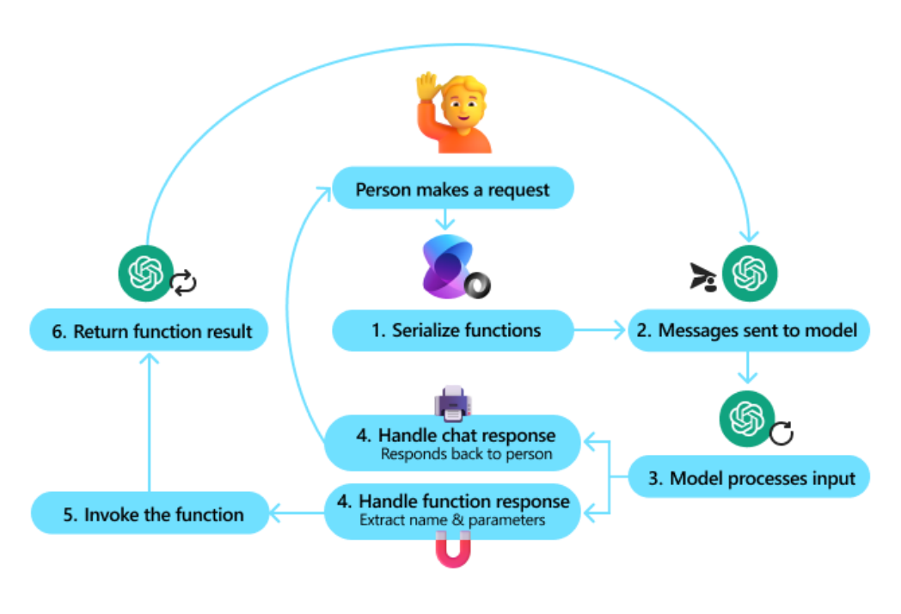

Function Calling
在 AI Agent 系统中，工具调用是实现自动化任务执行的关键机制，而 Function Calling（函数调用） 则是当前大模型平台中实现 Tool Use 最常见的一种方式。通过 Function Calling，大语言模型不仅能 够理解用户需求，还可以按照预定义的结构生成函数调用请求，从而让系统自动执行对应的功能。 简单来说，Function Calling 的核心思想是：让大语言模型输出结构化的函数调用信息，而不是普通文 本，然后由系统根据这些信息执行具体操作。这种机制可以显著提高工具调用的稳定性和准确性，使 Agent 系统能够在复杂业务场景中可靠运行。

Function Calling 工作流程
在传统的大模型应用中，模型通常只会生成自然语言文本，例如回答问题或生成内容。但在 Function Calling 机制下，模型不仅可以生成文本，还可以生成 函数调用结构。系统会根据这个结构去执行真实 的函数，然后把执行结果再返回给模型继续推理。
一个完整的 Function Calling 工作流程通常包括以下几个步骤。 第一步是 定义可用函数。系统需要提前向模型提供所有可调用函数的信息，包括函数名称、功能描述 以及参数结构。模型会根据这些信息判断在什么情况下应该调用对应函数。
第二步是 用户输入任务请求。用户向 Agent 提出问题或任务，例如查询订单、搜索知识库或者生成数 据报告。系统会把用户输入与函数定义一起发送给大语言模型。 第三步是 模型判断是否需要调用函数。模型会根据任务需求进行推理。如果任务可以直接回答，模型 会生成普通文本；如果任务需要访问外部系统，模型就会生成函数调用请求。 第四步是 生成函数调用参数。当模型决定调用某个函数时，它会按照函数定义的结构生成参数。例如 查询订单时，模型可能会生成一个包含订单编号的 JSON 对象。 第五步是 系统执行函数。在收到模型生成的函数调用请求之后，Agent 系统会根据函数名称找到对应 的程序接口，并执行真实的业务逻辑，例如调用数据库、访问 API 或执行代码。 第六步是 返回执行结果并继续推理。函数执行完成后，系统会将返回结果再次发送给模型。模型会根 据新的信息继续推理，最终生成完整的回答。 通过这一流程，大语言模型可以在保持推理能力的同时，安全地调用外部系统，而不需要直接执行代 码。
JSON Schema 定义
在 Function Calling 机制中，函数参数通常采用 JSON Schema 的形式进行定义。JSON Schema 是 一种结构化数据描述标准，用于明确说明函数需要哪些参数、参数类型是什么以及哪些参数是必需 的。 通过使用 JSON Schema，系统可以向模型提供清晰的函数接口说明，使模型能够准确地生成调用参 数。
一个典型的函数定义通常包含以下几个部分：
1）函数名称（name） 用于标识函数，例如 get_weather 、 query_order 等。 2）函数描述（description）
用于解释函数的功能，例如“根据城市名称查询天气信息”。 3）参数结构（parameters）
使用 JSON Schema 描述函数参数的结构、类型和含义。
下面是一个简单的函数定义示例：
1 { 2 "name": "query_order", 3 "description": " 查询订单状态 ", 4 "parameters": { 5 "type": "object", 6 "properties": { 7 "order_id": { 8 "type": "string",
9 "description": " 订单编号 " 10 } 11 }, 12 "required": ["order_id"] 13 } 14 }
当用户询问订单状态时，大语言模型可能会生成如下函数调用请求：
1 { 2 "name": "query_order", 3 "arguments": { 4 "order_id": "10234" 5 } 6 }
系统接收到这个请求后，就可以执行对应的函数逻辑，例如查询数据库并返回订单状态。
Function Calling 在 Agent 中的作用
Function Calling 在 Agent 系统中扮演着非常重要的角色，因为它解决了 模型输出不稳定的问题。如 果没有结构化调用机制，模型可能会用自然语言描述调用过程，例如“我将调用订单查询接口”。这 种输出对于系统来说是难以解析和执行的。 通过 Function Calling，模型可以直接生成标准化的函数调用结构，使系统能够稳定地解析并执行任 务。
在实际工程中，Function Calling 还带来了几个重要优势。
首先，它可以 保证参数格式正确。由于参数结构是由 JSON Schema 定义的，模型会按照结构生成数 据，从而减少参数错误。 其次，它可以 提高工具调用准确率。模型在选择工具时会参考函数描述，从而更容易做出正确决策。 再次，它可以 提升系统安全性。模型只能调用系统预先定义的函数，无法执行任意代码。 最后，它能够 简化 Agent 架构实现。许多现代 Agent 框架（例如 LangChain、OpenAI Agents、 AutoGen 等）都直接基于 Function Calling 构建工具调用能力。 因此，在当前的大模型应用开发中，Function Calling 已经成为实现 Agent 工具调用的标准方式之 一。